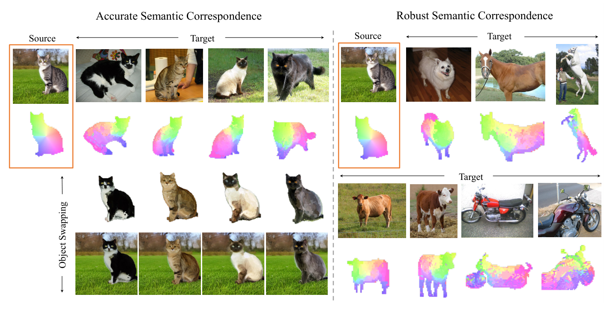
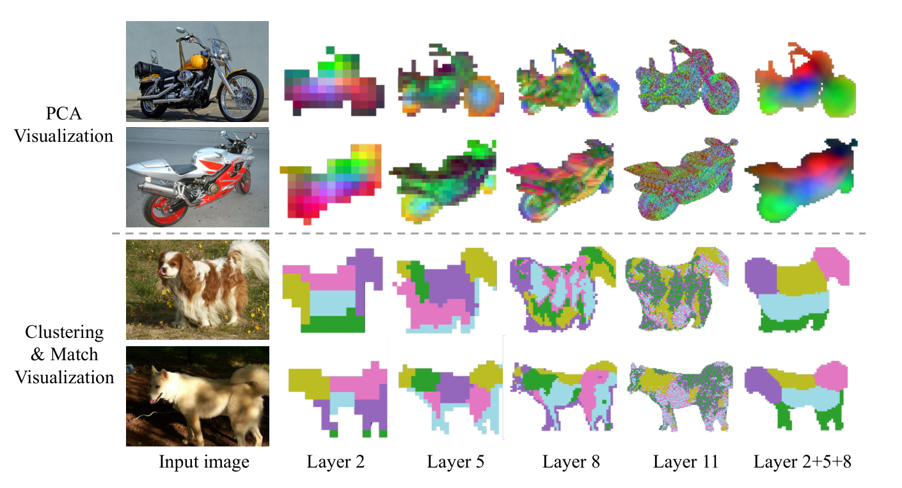
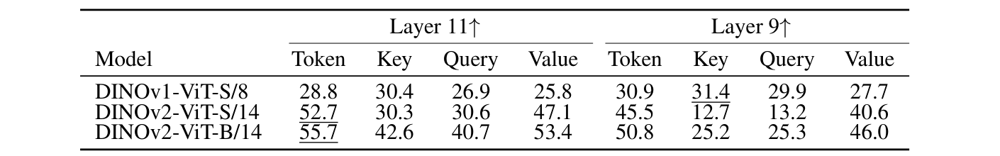
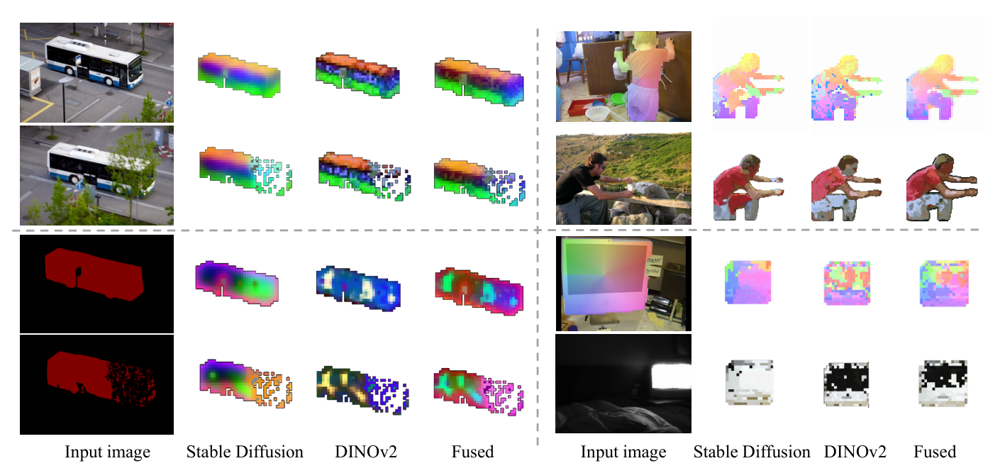
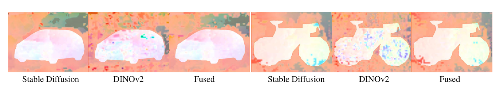
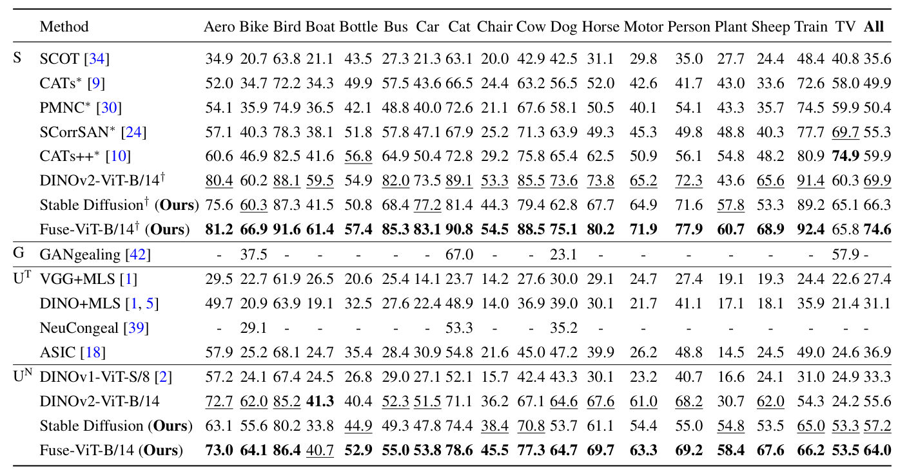
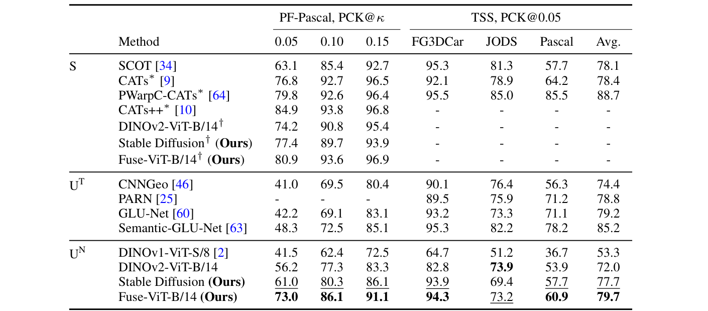
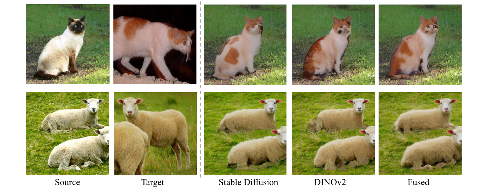

두 특징 이야기: Stable Diffusion은 제로샷 시맨틱 대응에서 DINO를 보완한다
초록 Abstract
텍스트-이미지 확산 모델(text-to-image diffusion model)은 고품질 이미지를 생성하고 편집하는 능력에서 크게 발전했다. 그래서 분류, 시맨틱 분할(semantic segmentation), 스타일화(stylization) 같은 다운스트림 작업을 풀려고 확산 모델 특징(feature)으로 이미지 한 장을 이해하고 처리하는 연구가 많이 나왔다. 그러나 이 특징이 서로 다른 여러 이미지와 객체 사이에서 무엇을 드러내는지는 거의 알려지지 않았다.
이 연구는 Stable Diffusion(SD) 특징을 시맨틱 대응(semantic correspondence)과 밀집 대응(dense correspondence)에 활용하고, 간단한 후처리만 거쳐도 SD 특징이 최고 성능(SOTA) 표현과 수치상 비슷한 성능을 낸다는 사실을 발견한다. 흥미롭게도 분석해 보니 SD 특징은 최근 공개된 DINOv2 같은 기존 표현 학습(representation learning) 특징과 성질이 매우 다르다. DINOv2는 희소하지만 정확한 매칭을 내고, SD 특징은 공간 정보를 잘 담지만 가끔 의미가 틀린 매칭을 낸다.
두 특징을 단순히 융합(fusion)하기만 해도 놀라울 만큼 잘 작동한다. 융합 특징 위에서 최근접 이웃(nearest neighbor) 탐색만으로 제로샷(zero-shot) 평가를 해도 SPair-71k, PF-Pascal, TSS 같은 벤치마크 데이터셋에서 기존 최고 성능 방법보다 크게 앞선다. 또한 이렇게 얻은 대응을 이용하면 작업별 미세 조정(fine-tuning) 없이도 고품질 객체 교체(object swapping)가 가능하다.
1. 서론 Introduction
텍스트-이미지 확산 모델[44, 48, 50]이 최근 거둔 성과 덕분에, 이미지 한 장을 이 모델이 내부에서 어떻게 표현하는지 분석하고 이해하려는 관심이 커졌다. 텍스트-이미지 확산 모델은 텍스트 프롬프트와 이미지 내용을 효과적으로 잇는다. 그러니 이미지에 무엇이 들어 있는지 이해할 것이고, 실제로 최근 연구[11, 31]는 이 모델이 효과적인 분류기임을 보였다. 또한 이 모델은 특정 장면을 생성하면서 객체의 배치와 위치를 어느 정도 조절할 수 있으므로[72] 객체의 위치도 찾아낼 수 있을 것이고, [68]은 이 모델이 시맨틱 분할에 효과적임을 보였다. 이 밖에도 여러 방법[12, 17, 27, 65]이 스타일화나 이미지 편집 같은 다운스트림 작업에 쓰려고 특징을 꺼내 편집한다.
그러나 이 접근법들은 거의 모두 이미지 한 장 안에서 텍스트-이미지 확산 특징이 어떤 성질을 갖는지만 살펴보았다. 이 특징들이 서로 다른 여러 이미지와 객체 사이에서 어떻게 관련되는지는 거의 알려지지 않았다. 쉽게 말해, Stable Diffusion 안에서 고양이의 특징은 개의 특징과 얼마나 비슷한가? 이 논문은 두 장 이상의 이미지에서 비슷한 화소를 잇는 고전적 비전 작업인 시맨틱 대응이라는 관점으로 Stable Diffusion(SD) 특징을 살펴보고, 서로 다른 이미지의 특징이 어떻게 관련되는지 이해하는 데 초점을 둔다.

대응 작업에서는 이 특징들을 기본적인 기법으로 앙상블하고 차원을 줄이기만 해도, 밀집 대응과 시맨틱 대응 모두에서 다른 최고 성능 표현만큼 좋은 표현을 얻는다. 그런데 정성적 결과를 자세히 들여다보면 흥미로운 사실이 드러난다. SD 특징은 공간 배치를 강하게 감지해 매끄러운 대응을 만들지만(그림 3 왼쪽 아래처럼 버스의 앞과 뒤를 서로 다르게 표현한다), 두 객체 사이의 화소 단위 매칭은 자주 부정확하다(한 버스의 앞이 다른 버스의 뒤와 매칭되기도 한다). 실제로 DINOv1[2] 같은 기존 특징과 비교하면 SD 특징의 강점과 약점은 매우 다르다.
선행 연구[2]는 DINOv1이 시맨틱 대응과 부위 추정(part estimation)에 효과적인 밀집 시각 기술자(dense visual descriptor)임을 보였다. 그러나 우리가 아는 한, 여러 비전 작업에서 성능을 끌어올렸지만 대응 작업에서는 검증되지 않은 DINOv2를 이 관점으로 깊이 분석한 연구는 아직 없다. 이 논문은 대응 작업에서 DINOv2가 DINOv1보다 실제로 뛰어나지만, 다른 후처리가 필요함을 보인다. DINOv2는 희소하지만 정확한 매칭을 만들고, 놀랍게도 이 성질은 SD 특징이 주는 풍부한 공간 정보와 자연스럽게 서로를 보완한다.
이 연구는 두 특징을 정렬(align)하고 융합하는 간단하지만 효과적인 전략을 제안한다. 융합한 표현은 두 특징의 강점을 모두 살린다. 대응을 구할 때는 최근접 이웃만으로 이 특징들의 제로샷(대응 작업용 학습을 전혀 하지 않는) 성능을 평가한다. 이렇게 단순하게 설정해도 융합 특징은 SPair-71k[36], PF-Pascal[20], TSS[59] 벤치마크 데이터셋에서 기존 방법을 앞선다. 또한 융합 표현으로 인스턴스 교체 같은 새로운 작업도 할 수 있다. 추정한 밀집 대응으로 두 이미지의 객체를 자연스럽게 바꾸면서도 객체 고유의 모습을 그대로 지킨다.
이 연구의 주요 기여는 다음과 같다.
- 텍스트-이미지 생성 모델의 내부 표현을 시맨틱 대응과 밀집 대응에 쓸 수 있음을 보인다.
- 공간을 인지하지만 부정확한 대응을 만드는 SD 특징과, 정확하지만 희소한 대응을 만드는 표준 표현 학습 특징(DINOv2)의 특성을 분석하고, 두 특징이 서로를 보완함을 보인다.
- SD와 DINOv2 특징을 정렬하고 앙상블하는 간단한 전략을 설계하고, 이 특징을 제로샷으로 평가(최근접 이웃만 쓰고 별도 학습은 하지 않음)해도 시맨틱 대응과 밀집 대응의 여러 최고 성능 방법을 앞설 수 있음을 보인다. 실험에서 융합 특징은 두 특징 각각의 성능을 끌어올리고, 어려운 SPair-71k 데이터셋(+13%)은 물론 PF-Pascal(+15%)과 TSS(+5%)에서도 기존 방법을 크게 앞선다.
- 이 방법으로 얻은 고품질 대응을 활용한 인스턴스 교체 응용을 제시한다.
2. 관련 연구 Related work
밀집 대응을 위한 특징 기술자. 딥러닝 모델[15, 40, 45, 52, 66, 71]은 회전, 크기 변화, 원근 변환 같은 광도 변화와 기하 변화에 강건한 밀집 대응용 특징을 학습한다. 그러나 대부분은 강체 변환을 다루려고 실외 장면의 이미지 매칭에 집중한다. 아미르(Amir) 등[2]은 자기지도 비전 트랜스포머(Vision Transformer, DINOv1[6])에서 꺼낸 특징이 국소적인 의미 정보를 담은 효과적인 밀집 시각 기술자임을 보였다. 이들은 이 특징을 (부위) 공동 분할(co-segmentation)과 시맨틱 대응 같은 여러 응용에 적용했다. 최근 DINOv2[41]는 모델 크기를 키우고 엄선한 대량의 데이터를 결합해 DINOv1[6]의 규모를 확장했다. DINOv2는 분류, 분할, 단안 깊이 추정 같은 다운스트림 작업에서 강한 일반화 성능을 보였지만, 대응 작업에서는 깊이 연구되지 않았다. 이 연구는 DINOv2가 DINOv1보다 훨씬 좋은 대응 결과를 내지만, DINO 특징은 전반적으로 희소하고 잡음이 많은 대응 필드를 만든다는 사실을 보인다.
시맨틱 대응. 시맨틱 대응[33]은 같은 객체 클래스에 속하지만 외형, 시점, 비강체 변형(non-rigid deformation)이 다른 객체들 사이에서 밀집 대응을 추정하는 작업이다. 기존 방법은 [64]에 따르면 세 단계로 이루어진다. 특징을 추출하고, 비용 볼륨(cost volume)을 구성한 다음, 변위 필드(displacement field)[60–63]나 매개변수화한 변환[25, 28, 46, 47, 54]을 회귀로 구한다. 그러나 이 방법들은 변위 필드가 매끄럽거나 매개변수화한 (아핀) 변환이 국소적으로만 변하기 때문에, 관절이 복잡하게 움직이는 변형에서는 밀집 대응을 제대로 정하지 못한다. 고전적인 응결(congealing) 방법[29]에서 영감을 얻은 최근의 몇몇 방법은 사전학습한 DINOv1 특징[18, 39]이나 GAN으로 생성한 데이터[42]를 이용해 같은 클래스의 여러 객체를 정렬하는 법을 학습한다. 이 방법들은 다른 작업을 위해 배운 지식을 밀집 대응 작업에도 쓸 수 있다는 가능성을 보여 준다. 그러나 객체를 정렬할 때 강체성을 강하게 가정하는 탓인지, 위상이 크게 바뀌는 경우는 잘 다루지 못한다. 반면 이 연구는 이미지 생성 작업을 위해 학습한 Stable Diffusion 특징이, 관절이 움직이고 형태가 비강체로 변하는 어려운 제로샷 밀집 대응 작업에서도 뛰어난 능력을 보인다는 사실을 발견한다.
확산 모델. 확산 확률 모델(diffusion probabilistic model, 확산 모델)[55]과 잡음 제거 확산 확률 모델(denoising diffusion probabilistic model, DDPM)[23, 38]은 이미지 생성 작업[13, 37, 48, 50, 51, 57]에서 최고 성능을 보였다. 또한 확산 모델은 이미지 분할[3, 4, 8, 26, 58, 67], 객체 검출[7], 단안 깊이 추정[14, 53] 같은 여러 비전 작업에 쓰였다. 최근에는 사전학습한 확산 모델이 무엇을 이해하는지 분석하고, 그 지식을 파놉틱 분할(panoptic segmentation)[68], 시맨틱 분할과 깊이 추정[73] 같은 이미지 한 장 단위 작업에 꺼내 쓰는 데 관심이 크게 쏠렸다. 이 논문은 이미지 사이의 제로샷 밀집 대응에서 확산 특징이 지닌 잠재력을 밝힌다.
3. Stable Diffusion과 비전 트랜스포머로 구하는 시맨틱 대응 Semantic correspondences via Stable Diffusion and Vision Transformer
먼저 시맨틱 대응에서 Stable Diffusion(SD) 특징이 어떤 성질을 보이는지 살펴본다. 이어서 DINO 특징과 SD 특징이 서로를 어떻게 보완하는지 분석하고, 마지막으로 두 특징의 강점을 모두 살리는 간단하고 효과적인 융합 전략을 소개한다.
3.1 Stable Diffusion 특징은 시맨틱 대응에 쓸 만한가? Are Stable Diffusion features good for semantic correspondence?
Stable Diffusion(SD)[48]은 텍스트 입력을 조건으로 고품질 이미지를 합성하는 놀라운 능력을 보인다. 이 능력은 SD가 이미지를 강력하게 내부 표현하고, 이미지의 내용과 배치를 모두 포착한다는 뜻이다. 최근 여러 연구[4, 68, 73]는 사전학습한 SD 특징을 시맨틱 분할이나 깊이 인식 같은 이미지 한 장 단위 작업에 썼다. 시각적 대응에서는 특징이 중요한 역할을 하므로, 이 연구는 SD 특징이 이미지 사이의 시맨틱 대응을 구하는 데 도움이 되는지 조사한다.

다음으로 SD 특징을 꺼내는 방법을 간단히 설명한다. Stable Diffusion은 세 부분으로 이루어진다. 인코더 𝓔와, VQGAN[16]에서 파생해 화소 공간과 잠재 공간(latent space)을 오가는 디코더 𝓓, 그리고 잠재 공간에서 작동하는 잡음 제거 U-Net 𝓤이다. 먼저 인코더 𝓔로 입력 이미지 x0를 잠재 공간에 투영해 잠재 코드 z0를 만든다. 다음으로 미리 정한 시간 단계(time step) t에 맞춰 잠재 코드에 가우시안 잡음 ϵ을 더한다. 그런 다음 시간 단계 t의 잠재 코드 zt와 텍스트 임베딩 C를 입력으로 넣고, 잡음 제거 U-Net에서 특징 FSD를 꺼낸다. 전체 과정을 식으로 쓰면 다음과 같다.
여기서 계수 αt는 [23]이 정의한 잡음 일정(noise schedule)을 조절한다. 텍스트 임베딩 C는 [68]을 따라 암묵적 캡셔너(implicit captioner)를 쓴다. 실험해 보면 이 방식이 명시적인 텍스트 프롬프트보다 낫다.
선행 연구[65]는 이미지-이미지 변환 작업에서 U-Net의 중간 레이어가 의미 정보를 더 많이 담는다고 보고했지만, 이 특징이 시맨틱 대응에도 적합한지는 분명하지 않았다. 이 특징의 성질을 살펴보려고, 먼저 U-Net 디코더의 여러 레이어 특징에 주성분 분석(principal component analysis, PCA)을 적용한다. 그림 2 위처럼 초기 레이어는 의미와 구조(예: 바퀴와 좌석)에 더 집중하지만 거친 수준에 머물고, 후기 레이어는 질감과 외형의 세부 정보를 담는 경향이 있다. 또한 짝지은 인스턴스의 특징에 K-평균 군집화(k = 5)를 적용해, 군집화한 특징이 같은 클래스의 예시들 사이에서 일관된 의미 정보를 담는지 눈으로 확인한다. 그림 2 아래처럼 객체의 서로 다른 부위가 군집으로 묶이고 인스턴스 쌍 사이에서 짝지어진다. PCA 분석과 K-평균 분석 모두 초기 레이어 특징은 거칠지만 일관된 의미를 담고, 후기 레이어는 저수준 질감 세부에 집중함을 보여 준다.
이 관찰을 바탕으로 서로 다른 수준(2+5+8)의 특징을 이어 붙여(concatenation) 의미와 국소 세부를 함께 담는다. 그러나 그냥 이어 붙이면 특징 차원이 쓸데없이 커진다(1280 + 960 + 480 = 2720). 차원을 줄이려고 레이어마다 이미지 쌍 전체에서 PCA를 계산하고, 줄인 특징을 같은 해상도로 모은다. 구체적으로, 먼저 소스 이미지와 타깃 이미지에서 i번째 레이어 특징 fis와 fit를 꺼낸다. 다음으로 레이어마다 소스 특징과 타깃 특징을 이어 붙여 PCA를 함께 계산한다.
그런 다음 레이어별로 차원을 줄인 특징 f̃is와 f̃it를 모아 같은 해상도로 업샘플링해, 최종 SD 특징 f̃s와 f̃t를 만든다. 그림 2 마지막 열처럼, 앙상블한 특징은 두 성질 사이에서 균형을 잡아 충분한 해상도로 의미와 질감에 모두 집중한다.
또한 디코더 레이어 안에서 특징을 꺼내는 정확한 위치도 중요하다. U-Net의 디코더 레이어는 직전 디코더 레이어의 특징과 스킵 연결(skip connection)로 들어온 인코더 레이어의 특징을 함께 입력받고, 합성곱 레이어, 셀프 어텐션(self-attention) 레이어, 크로스 어텐션(cross-attention) 레이어를 차례로 거쳐 디코더 특징을 내보낸다. 실험해 보니 디코더 특징만 쓰는 쪽이 인코더 특징과 합치는 쪽보다 성능이 좋고, 하위 레이어 하나(예: 합성곱 레이어, 셀프 어텐션 레이어)의 특징만 쓰는 쪽보다도 좋다. 자세한 내용은 부록에 실었다.
자연스럽게 이런 질문이 생긴다. 더 널리 연구된 판별적(discriminative) 특징과 비교해, SD 특징은 쓸모 있으면서도 보완적인 시맨틱 대응을 제공하는가? 다음으로 널리 쓰이는 DINOv1[6] 특징과 그 후속인 DINOv2[41] 특징이 시맨틱 대응에서 어떤 성질을 보이는지 함께 논의한다.
3.2 시맨틱 대응에서 DINO 특징의 발전 Evolution of DINO features for semantic correspondence
카롱(Caron) 등[6]은 자기지도 ViT 특징(DINO)이 “시맨틱 분할에 필요한 정보를 명시적으로 담고, 뛰어난 k-최근접 이웃(k-NN) 분류기 역할을 한다”는 사실을 보였다. 아미르(Amir) 등[2]은 한 걸음 더 나아가, DINO 특징이 이미지 사이의 제로샷 시맨틱 대응을 가능하게 하는 흥미로운 성질을 여럿 지녔음을 보였다. 가장 최근에는 오캅(Oquab) 등[41]이 학습 데이터와 모델 크기를 키워 DINOv2를 내놓았고, 분할과 깊이 추정 같은 여러 이미지 한 장 단위 작업에서 성능이 크게 오르는 것을 관찰했다. 이 연구는 DINOv2가 이미지 사이의 시맨틱 대응도 크게 개선하는지 살펴본다.
표준 대응 벤치마크인 SPair-71k[36]에서 DINOv2의 여러 내부 특징을 시험했다(자세한 설정은 4절 참고). 표 1의 PCK 결과(높을수록 좋음)처럼 DINOv2 특징은 DINOv1보다 크게 나아진다. 다만 DINOv2는 마지막(11번째) 레이어의 ‘토큰(token)’ 패싯(facet)에서 가장 좋은 성능을 낸다. 반면 아미르 등[2]은 DINOv1에서는 더 앞쪽 레이어의 ‘키(key)’ 패싯이 가장 좋다고 보고했다. 이 논문은 DINOv2의 11번 레이어 토큰 특징을 FDINO 또는 DINO라고 부른다.


3.3 SD 특징과 DINO 특징의 강점과 약점 비교 Comparing the strengths and weaknesses of SD and DINO features
이제 SD 특징과 DINO 특징의 성질, 그리고 두 특징이 서로를 보완할 가능성을 논의한다. 앞의 PCA 시각화와 별도로, 두 특징으로 이미지 쌍 사이의 밀집 대응을 최근접 이웃 탐색으로 계산하고, 입력 조건에 따라 두 특징이 어떻게 행동하는지 살펴본다.
같은 객체 인스턴스 사이의 대응. 짝지은 두 이미지의 인스턴스가 같은 단순한 경우(그림 3 왼쪽 위)에는 SD 특징과 DINO 특징 모두 잘 작동한다. 그러나 질감이 없는 예에서는 성능이 갈린다. 객체 마스크를 입력으로 주면(그림 3 왼쪽 아래), DINOv2 특징은 질감 없는 이 예에서 유효한 대응을 만들지 못하지만, SD 특징은 공간 배치를 강하게 감지하므로 안정적으로 작동한다.
서로 다른 객체 인스턴스 사이의 대응. 같은 클래스 안에서 생김새가 다른 예에서는 SD 특징과 DINO 특징 모두 잘 작동하지만, 잘하는 영역이 다르다. DINO는 더 정확한 매칭을 내지만(예: 그림 3 오른쪽 위의 허벅지 부위), 오른쪽 두 사례 모두에서 보이듯 대응 필드에 잡음이 많은 편이다. 반면 SD는 오른쪽 두 사례 모두에서 더 매끄러운 대응을 만들고, 특히 오른쪽 아래 사례에서 결정적인 공간 정보를 준다.
대응의 공간적 일관성. 추정한 대응이 공간적으로 얼마나 일관되는지 분석하려고 시맨틱 흐름(semantic flow), 즉 소스 이미지의 모든 화소에서 타깃 이미지의 대응 화소로 향하는 2차원 움직임 벡터를 구한다. 그런 다음 TSS 데이터셋[59]에서 추정한 시맨틱 흐름의 매끄러움, 즉 1차 차분(first-order difference)을 계산한다(표 2). 이 분석으로 방법마다 만든 흐름 맵이 본래 얼마나 매끄러운지 알 수 있다. Stable Diffusion 특징은 DINOv2-ViT-B/14보다 매끄러운 결과를 낸다. 이는 Stable Diffusion 특징이 DINO 특징보다 공간을 더 잘 이해한다는 뜻이다.

논의. 표 2는 TSS 데이터셋에서 방법마다 추정한 흐름 필드의 공간적 매끄러움을 평가한다. Stable Diffusion 특징은 DINO 특징보다 매끄러운 밀집 대응을 만든다. 그림 4를 보면 DINO 특징으로 구한 대응에는 고립된 이상치가 적지 않게 섞이지만, Stable Diffusion으로 구한 대응은 공간적으로 더 일관된다.
요약. 위의 분석은 DINO 특징과 Stable Diffusion 특징이 서로를 보완한다는 사실을 드러낸다. DINO 특징은 고수준 의미 정보를 포착해 희소하지만 정확한 매칭을 잘 찾는다. 반면 Stable Diffusion 특징은 저수준 공간 정보에 집중해, 특히 질감 신호가 약할 때 대응의 공간적 일관성을 지킨다. DINOv2와 확산 특징의 이런 상호보완적 성질은 시맨틱 대응 성능을 끌어올릴 가능성이 크다. 그러면 자연스럽게 다음 질문이 떠오른다.
3.4 SD 특징과 DINO 특징을 어떻게 융합하는가? How to fuse SD and DINO features?
앞의 논의를 바탕으로, SD 특징과 DINO 특징을 함께 활용하는 간단하지만 효과적인 융합 전략을 제안한다. 핵심은 두 특징을 각각 정규화해 크기와 분포를 맞춘 다음, 이어 붙이는 것이다.
여기서 ‖·‖2는 L2 정규화를 뜻하고, α는 두 특징의 상대적 가중치를 조절하는 하이퍼파라미터다. 이 융합 방법에서 중요한 부분은 가중치 α를 고르는 일이다. 실험해 보니 α = 0.5일 때 두 특징이 균형을 이루어 상호보완적 강점을 효과적으로 살린다. α를 바꿔 본 실험(ablation)은 보충 자료에 실었다.
그림 3에서 이 단순한 융합 전략이 뜻밖에 효과적임을 확인할 수 있고, SPair-71k 데이터셋의 어려운 사례에서 눈에 띄게 나아진다. 결합한 특징은 모든 사례에서 어느 한 특징만 쓸 때보다 확연히 좋다. 대응이 더 정밀해지고 잡음이 줄어들 뿐 아니라, SD 특징 고유의 매끄러운 전환과 공간 정보도 그대로 유지한다. 또한 표 2(정량)와 그림 4(정성)에서 보이듯, 매끄러운 전환과 공간 정보를 유지한다는 점에서 융합 특징의 성능은 SD 특징과 매우 가깝다. 뒤에서는 여러 공개 벤치마크 데이터셋에서 기존 방법과 폭넓게 비교해, 이 단순한 융합 전략이 얼마나 효과적인지 더 보여 준다.
4. 실험과 분석 Experiments and analysis
먼저 공개 벤치마크 데이터셋에서 희소 대응 작업과 밀집 대응 작업을 깊이 분석한다. 이어서 이 방법을 새롭게 응용해, 이 방법으로 구한 밀집 대응을 활용해 이미지 쌍 사이에서 인스턴스를 바꾸는 간단하고 효과적인 방법을 제시한다.
대응을 위한 특징 평가. 추출한 특징을 두 가지 설정에서 평가한다. 첫째, 제로샷 설정에서는 [2]를 따라 이미지 쌍의 특징 맵에서 최근접 이웃을 바로 찾는다. 둘째, 학습용 분할이 있는 데이터셋에서는 추출한 특징 위에 병목 레이어(bottleneck layer)[22, 68]를 하나 얹고 지도 방식으로 미세 조정한다. 학습 목표는 [35]와 같이, 대응 키포인트에 대한 CLIP 방식의 대칭 교차 엔트로피 손실(symmetric cross entropy loss)이다.
구현 세부. 특징 추출기로 Stable Diffusion v1-5 모델을 쓰고, 확산 모델의 시간 단계는 기본값 t = 100으로 둔다. 입력 해상도는 확산 모델이 960 × 960, DINO 모델이 840이고, 둘 다 해상도 60의 특징 맵을 만든다. PCA에는 효율을 높이려고 최적에 가까운 근사 특잇값 분해(singular value decomposition, SVD) 알고리즘[19]을 쓰고, DINO-ViT-B/14와 융합할 때는 특징 차원을 256으로 줄인다. 밀집 대응을 시각화할 때는 전처리로 [68]에서 얻은 분할 마스크를 적용한다. 모든 실험은 NVIDIA RTX3090 GPU 한 장으로 수행한다.
데이터셋. 희소 대응 작업은 두 표준 데이터셋 SPair-71k[36]와 PF-Pascal[20]에서 평가한다. 두 데이터셋은 각각 18개, 20개 범주에서 뽑은 70,958쌍과 1,341쌍의 이미지로 이루어진다. 밀집 대응은 TSS[59]에서 평가한다. TSS는 밀집 대응 정답을 제공하는 유일한 데이터셋으로, FG3DCAR[32], JODS[49], PASCAL[21] 데이터셋에서 가져온 이미지 400쌍을 담는다.
평가 지표. 대응 정확도는 표준 지표인 올바른 키포인트 비율(Percentage of Correct Keypoints, PCK)[70]로 재고, 임계값은 κ · max(h, w)로 둔다. 여기서 κ는 양의 정수이고, (h, w)는 선행 연구[18, 39, 42]와 같은 규약에 따라 SPair-71k에서는 인스턴스 경계 상자(bounding box)의 크기, PF-Pascal과 TSS에서는 이미지의 크기를 뜻한다.
4.1 희소 대응 Sparse correspondence
표 3은 SPair-71k 데이터셋에서 제로샷 평가와 지도 평가 결과를 보여 준다. 제로샷 방법(Fuse-ViT-B/14)은 비지도 방법은 물론 기존 지도 방법까지 포함한 모든 방법을 큰 차이로 앞서, 평균 PCK 64.0으로 1위를 차지한다. 또한 융합 전략은 DINOv2 기준선(DINOv2-ViT-B/14)의 성능을 크게 높여, PCK를 8.4p(55.6 → 64.0) 끌어올린다. Stable Diffusion 특징은 평균 PCK에서 DINOv2와 겨룰 만할 뿐 아니라, 공간 정보가 결정적인 일부 범주(예: “화분”, “기차”, “TV”)에서 특히 뛰어나다. 지도 설정에서도 같은 경향이 나타나고, 특히 기존 방법보다 PCK를 14.7p(59.9 → 74.6) 끌어올린다.

표 4에서는 PF-Pascal 데이터셋으로 이 방법을 추가 검증한다. PF-Pascal은 인스턴스 쌍 사이의 외형, 자세, 모양 변화가 작아 덜 어려운 데이터셋이다. 이 방법은 모든 비지도 방법을 꾸준히 앞서고, 모든 임계값에서 가장 높은 평균 PCK를 기록한다. 이번에도 융합 방법(Fuse-ViT-B/14)은 DINOv2 기준선(DINOv2-ViT-B/14)보다 성능을 크게 높인다. 이 결과는 두 특징의 장점을 함께 누리는 융합 전략이 효과적임을 잘 보여 준다.
4.2 밀집 대응 Dense correspondence
표 4는 TSS 데이터셋[59]의 밀집 대응 평가도 함께 보여 준다. 융합 방법(Fuse-ViT-B/14)은 TSS 데이터셋에서 최근접 이웃 탐색 기반 비지도 방법(UN)을 모두 앞선다. 이 결과도 융합 전략의 효과를 다시 확인해 주며, DINOv2-ViT-B/14 기준선보다 7.7p 크게 오른다. 다만 TSS 데이터셋에는 외형, 시점, 변형의 변화가 작은 덜 어려운 예(예: 자동차, 버스, 기차, 비행기, 자전거 등)가 들어 있어, 공간적 매끄러움을 강하게 전제하는 방법이 이 벤치마크에서 좋은 점수를 얻기 유리하다는 점에 유의해야 한다.

4.3 인스턴스 교체 Instance swapping
같거나 비슷한 범주의 인스턴스가 담긴 이미지 쌍이 주어질 때, 인스턴스 교체는 타깃 이미지의 인스턴스(타깃 인스턴스)를 소스 이미지의 인스턴스(소스 인스턴스) 자리로 옮기는 작업이다. 이때 타깃 인스턴스의 고유한 모습과 소스 인스턴스의 자세를 모두 지킨다. 그러면 타깃 인스턴스가 소스 환경에 자연스럽게 녹아든 새 이미지가 만들어진다. 이 방법으로 얻은 고품질 밀집 대응을 활용하면, 다음과 같은 간단한 과정으로 그럴듯하게 인스턴스를 바꿀 수 있다.
- 먼저 저해상도 특징 맵을 타깃 이미지 크기에 맞게 업샘플링한다.
- 업샘플링한 특징 맵을 바탕으로, 분할한 인스턴스에서 최근접 이웃 패치에 따라 화소 단위로 교체해 1차 교체 이미지를 얻는다.
- 교체 이미지의 품질을 높이려고, Stable Diffusion 기반 이미지-이미지 변환 과정[65]으로 1차 결과를 다듬는다.

다듬기 과정을 더 구체적으로 설명하면, 먼저 DDIM 역변환(DDIM inversion)[56]으로 교체 이미지를 초기 잡음으로 되돌리고, 이어서 잡음을 제거하는 DDIM 샘플링 과정을 거치며 확산 모델에서 특징을 꺼낸다. 마지막으로 이 특징에 인스턴스 범주를 담은 프롬프트를 결합해 다듬은 이미지를 생성한다. 그러면 교체된 인스턴스의 외형이 시각적으로 더 일관되고 그럴듯해진다. 다듬기 과정의 정량 분석과 정성 분석은 각각 보충 자료 A.8과 B.2에 실었다.
그림 5는 특징별 인스턴스 교체 결과를 눈으로 비교한다. SD는 매끄러운 결과를 내고, DINOv2는 세밀한 세부를 살린다. 두 특징을 융합하면 공간적 매끄러움과 세부 사이에서 균형을 잡는다. 예시는 보충 자료에 더 실었다.
[69] 벤치마크에서 800쌍을 골라 특징별 결과를 정량으로도 비교했다. 표 5의 정량 평가에서 융합 방법은 FID 점수, 품질 점수(quality score), CLIP 점수 세 지표 모두에서 꾸준히 앞선다. 지표는 [69]를 그대로 따른다. FID 점수는 생성한 이미지와 COCO 2017 테스트 이미지 사이를 CLIP 특징으로 측정하고, CLIP 점수는 소스 이미지의 편집 영역과 타깃 이미지에서 각각 꺼낸 CLIP 특징 사이의 코사인 유사도를 잰다. 이 결과는 융합 특징으로 구한 밀집 대응이 인스턴스의 외형을 지키는 데서도, 고품질 이미지를 생성하는 데서도 강하다는 것을 보여 준다. 융합 방법의 CLIP 점수가 더 높다는 것은 융합 특징 표현이 참조 이미지에 더 충실하다는 뜻이다. 한편 품질 점수가 더 높고 FID 점수가 더 낮다는 것은 융합 방법으로 생성한 이미지의 지각적 품질과 의미적 일관성이 더 뛰어나다는 뜻이다.
4.4 한계 Limitations
이 방법은 대응 성능에서 좋은 결과를 보이지만, 한계도 분명히 있다. 융합 특징의 해상도가 비교적 낮아 정밀한 매칭을 만들기 어렵다. 정밀한 매칭은 TSS 데이터셋 같은 밀집 대응 작업에서 특히 중요하다. 실패 사례는 보충 자료에서 자세히 다룬다. 또한 Stable Diffusion 모델을 결합하면 추론을 한 번만 하더라도, DINO 특징만 쓸 때보다 대응을 계산하는 비용이 상당히 늘어난다.
4.5 특징 상호보완성의 정량 분석 Quantitative analysis of feature complementary
표 6에서는 SD 특징과 DINOv2 특징이 서로 겹치지 않는 정보를 얼마나 담는지 정량으로 더 분석한다. 표 6은 SPair-71k와 PF-Pascal 벤치마크의 세 가지 PCK 수준에서 두 특징의 오류 분포를 자세히 보여 준다. 대부분의 설정에서 전체 사례의 20~30%는 한 특징이 실패한 곳에서 다른 특징이 성공한다. 이는 두 특징이 서로 겹치지 않는 정보를 상당히 많이 담는다는 뜻이다. 이 비중복성은 보충 자료 A.10에서 더 자세히 분석한다.
5. 특징의 행동에 관한 논의 Discussion on feature behavior
Stable Diffusion(SD) 특징과 DINOv2 특징이 서로 뚜렷하게 다르게 행동하자, 그 근본 원인을 묻는 질문이 생겼다. 자원이 부족해 검증하기는 어렵지만, 가능한 설명을 몇 가지 제시한다.
학습 방식. DINO는 자기지도 학습에서 데이터 증강(augmentation)을 쓰기 때문에, 공간 정보에 둔감해지도록(불변하도록) 학습될 수 있다. 반면 SD는 텍스트로 이미지를 합성하도록 학습하므로 전역 시각 단서와 국소 시각 단서를 모두 알아야 하고, 그래서 공간에 더 민감해질 수 있다.
구조 차이. DINOv2는 ViT 모델을 바탕으로 이미지를 패치의 나열로 해석한다. 위치 인코딩(positional encoding)을 쓰더라도 국소 구조를 그만큼 중시하지 않을 수 있다. 반면 SD의 U-Net에 있는 합성곱 레이어는 세부를 더 많이 간직하고 공간 정보를 더 잘 보존할 수 있다.
전반적으로, 이런 차이의 원인을 밝히는 일은 여전히 흥미로운 주제이며 앞으로 탐구할 좋은 방향이다.
6. 결론 Conclusion
이 연구는 텍스트-이미지 생성 모델, 즉 Stable Diffusion의 내부 표현을 시맨틱 대응 작업에 활용할 가능성을 탐구한다. Stable Diffusion 특징과 자기지도 DINO-ViT 특징이 서로를 보완한다는 사실을 밝혀, 두 특징 각각의 강점과 두 특징을 효과적으로 결합하는 방법을 더 깊이 이해하게 한다. 두 특징을 정렬하고 융합하는 단순한 전략은 어려운 SPair-71k 데이터셋에서 성능을 크게 높이고 기존 방법을 앞섬을 실험으로 입증했다. 이 결과는 시각적 대응에서는 더 좋은 특징을 찾는 일이 이득이 된다는 점을 시사한다.
참고문헌 References (원문)
- [1] Kfir Aberman, Jing Liao, Mingyi Shi, Dani Lischinski, Baoquan Chen, and Daniel Cohen-Or. Neural best-buddies: Sparse cross-domain correspondence. ACM Transitions on Graphics, 37 (4):1–14, 2018. 8
- [2] Shir Amir, Yossi Gandelsman, Shai Bagon, and Tali Dekel. Deep ViT features as dense visual descriptors. In European Conference on Computer Vision Workshops, 2022. 2, 3, 5, 6, 7, 8, 9
- [3] Tomer Amit, Tal Shaharbany, Eliya Nachmani, and Lior Wolf. SegDiff: Image segmentation with diffusion probabilistic models. arXiv:2112.00390, 2021. 3
- [4] Dmitry Baranchuk, Andrey Voynov, Ivan Rubachev, Valentin Khrulkov, and Artem Babenko. Label-efficient semantic segmentation with diffusion models. In International Conference on Learning Representations, 2022. 3
- [5] Mathilde Caron, Ishan Misra, Julien Mairal, Priya Goyal, Piotr Bojanowski, and Armand Joulin. Unsupervised learning of visual features by contrasting cluster assignments. Advances in Neural Information Processing Systems, pages 9912–9924, 2020. 8
- [6] Mathilde Caron, Hugo Touvron, Ishan Misra, Hervé Jégou, Julien Mairal, Piotr Bojanowski, and Armand Joulin. Emerging properties in self-supervised vision transformers. In International Conference Computer Vision, pages 9650–9660, 2021. 3, 5
- [7] Shoufa Chen, Peize Sun, Yibing Song, and Ping Luo. DiffusionDet: Diffusion model for object detection. In International Conference Computer Vision, 2023. 3
- [8] Ting Chen, Lala Li, Saurabh Saxena, Geoffrey Hinton, and David J. Fleet. A generalist framework for panoptic segmentation of images and videos. In International Conference Computer Vision, 2023. 3
- [9] Seokju Cho, Sunghwan Hong, Sangryul Jeon, Yunsung Lee, Kwanghoon Sohn, and Seungryong Kim. Cats: Cost aggregation transformers for visual correspondence. Advances in Neural Information Processing Systems, 34:9011–9023, 2021. 8, 9
- [10] Seokju Cho, Sunghwan Hong, and Seungryong Kim. Cats++: Boosting cost aggregation with convolutions and transformers. arXiv preprint arXiv:2202.06817, 2022. 8, 9
- [11] Kevin Clark and Priyank Jaini. Text-to-image diffusion models are zero-shot classifiers. arXiv preprint arXiv:2303.15233, 2023. 1
- [12] Guillaume Couairon, Jakob Verbeek, Holger Schwenk, and Matthieu Cord. DiffEdit: Diffusion- based semantic image editing with mask guidance. In International Conference on Learning Representations, 2023. 1
- [13] Prafulla Dhariwal and Alexander Nichol. Diffusion models beat GANs on image synthesis. Advances in Neural Information Processing Systems, pages 8780–8794, 2021. 3
- [14] Yiqun Duan, Xianda Guo, and Zheng Zhu. DiffusionDepth: Diffusion denoising approach for monocular depth estimation. arXiv:2303.05021, 2023. 3
- [15] Mihai Dusmanu, Ignacio Rocco, Tomas Pajdla, Marc Pollefeys, Josef Sivic, Akihiko Torii, and Torsten Sattler. D2-Net: A trainable CNN for joint description and detection of local features. In IEEE Conference on Computer Vision and Pattern Recogition, pages 8092–8101, 2019. 3
- [16] Patrick Esser, Robin Rombach, and Björn Ommer. Taming transformers for high-resolution image synthesis. In IEEE Conference on Computer Vision and Pattern Recogition, pages 12873–12883, 2021. 4
- [17] Vidit Goel, Elia Peruzzo, Yifan Jiang, Dejia Xu, Nicu Sebe, Trevor Darrell, Zhangyang Wang, and Humphrey Shi. PAIR-Diffusion: Object-level image editing with structure-and-appearance paired diffusion models. arXiv preprint arXiv:2303.17546, 2023. 1
- [18] Kamal Gupta, Varun Jampani, Carlos Esteves, Abhinav Shrivastava, Ameesh Makadia, Noah Snavely, and Abhishek Kar. ASIC: Aligning sparse in-the-wild image collections. arXiv preprint arXiv:2303.16201, 2023. 3, 7, 8
- [19] Nathan Halko, Per-Gunnar Martinsson, and Joel A. Tropp. Finding structure with randomness: Probabilistic algorithms for constructing approximate matrix decompositions. SIAM review, 53 (2):217–288, 2011. 7
- [20] Bumsub Ham, Minsu Cho, Cordelia Schmid, and Jean Ponce. Proposal Flow: Semantic correspondences from object proposals. IEEE Transactions on Pattern Analysis and Machine Intelligence, 40(7):1711–1725, 2017. 2, 7
- [21] Bharath Hariharan, Pablo Arbeláez, Lubomir Bourdev, Subhransu Maji, and Jitendra Malik. Semantic contours from inverse detectors. In International Conference Computer Vision, pages 991–998, 2011. 7
- [22] Kaiming He, Xiangyu Zhang, Shaoqing Ren, and Jian Sun. Deep residual learning for im- age recognition. In Proceedings of the IEEE Conference on Computer Vision and Pattern Recognition (CVPR), June 2016. 7
- [23] Jonathan Ho, Ajay Jain, and Pieter Abbeel. Denoising diffusion probabilistic models. In Advances in Neural Information Processing Systems, pages 6840–6851, 2020. 3, 4
- [24] Shuaiyi Huang, Luyu Yang, Bo He, Songyang Zhang, Xuming He, and Abhinav Shrivastava. Learning semantic correspondence with sparse annotations. In European Conference Computer Vision, pages 267–284, 2022. 8
- [25] Sangryul Jeon, Seungryong Kim, Dongbo Min, and Kwanghoon Sohn. PARN: Pyramidal affine regression networks for dense semantic correspondence. In European Conference Computer Vision, pages 351–366, 2018. 3, 9
- [26] Peng Jiang, Fanglin Gu, Yunhai Wang, Changhe Tu, and Baoquan Chen. DifNet: Semantic segmentation by diffusion networks. In Advances in Neural Information Processing Systems, 2018. 3
- [27] Bahjat Kawar, Shiran Zada, Oran Lang, Omer Tov, Huiwen Chang, Tali Dekel, Inbar Mosseri, and Michal Irani. Imagic: Text-based real image editing with diffusion models. In IEEE Conference on Computer Vision and Pattern Recogition, 2023. 1
- [28] Seungryong Kim, Stephen Lin, Sang Ryul Jeon, Dongbo Min, and Kwanghoon Sohn. Recur- rent transformer networks for semantic correspondence. In Advances in Neural Information Processing Systems, 2018. 3
- [29] Erik G. Learned-Miller. Data driven image models through continuous joint alignment. IEEE Transactions on Pattern Analysis and Machine Intelligence, 28(2):236–250, 2005. 3
- [30] Jae Yong Lee, Joseph DeGol, Victor Fragoso, and Sudipta N. Sinha. PatchMatch-based neighborhood consensus for semantic correspondence. In IEEE Conference on Computer Vision and Pattern Recogition, pages 13153–13163, 2021. 8
- [31] Alexander C. Li, Mihir Prabhudesai, Shivam Duggal, Ellis Brown, and Deepak Pathak. Your diffusion model is secretly a zero-shot classifier. arXiv preprint arXiv:2303.16203, 2023. 1
- [32] Yen-Liang Lin, Vlad I Morariu, Winston Hsu, and Larry S. Davis. Jointly optimizing 3D model fitting and fine-grained classification. In European Conference Computer Vision, pages 466–480, 2014. 7
- [33] Ce Liu, Jenny Yuen, and Antonio Torralba. SIFT Flow: Dense correspondence across scenes and its applications. IEEE Transactions on Pattern Analysis and Machine Intelligence, 33(5): 978–994, 2010. 3
- [34] Yanbin Liu, Linchao Zhu, Makoto Yamada, and Yi Yang. Semantic correspondence as an optimal transport problem. In IEEE Conference on Computer Vision and Pattern Recogition, pages 4463–4472, 2020. 8, 9
- [35] Grace Luo, Lisa Dunlap, Dong Huk Park, Aleksander Holynski, and Trevor Darrell. Diffusion hyperfeatures: Searching through time and space for semantic correspondence. arXiv preprint arXiv:2305.14334, 2023. 7
- [36] Juhong Min, Jongmin Lee, Jean Ponce, and Minsu Cho. SPair-71k: A large-scale benchmark for semantic correspondence. arXiv:1908.10543, 2019. 2, 5, 7
- [37] Alex Nichol, Prafulla Dhariwal, Aditya Ramesh, Pranav Shyam, Pamela Mishkin, Bob McGrew, Ilya Sutskever, and Mark Chen. GLIDE: Towards photorealistic image generation and editing with text-guided diffusion models. In International Confernece on Machine Learning, 2022. 3
- [38] Alexander Quinn Nichol and Prafulla Dhariwal. Improved denoising diffusion probabilistic models. In International Confernece on Machine Learning, pages 8162–8171, 2021. 3
- [39] Dolev Ofri-Amar, Michal Geyer, Yoni Kasten, and Tali Dekel. Neural Congealing: Aligning images to a joint semantic atlas. In IEEE Conference on Computer Vision and Pattern Recogition, 2023. 3, 7, 8
- [40] Yuki Ono, Eduard Trulls, Pascal Fua, and Kwang Moo Yi. LF-Net: Learning local features from images. In Advances in Neural Information Processing Systems, 2018. 3
- [41] Maxime Oquab, Timothée Darcet, Théo Moutakanni, Huy Vo, Marc Szafraniec, Vasil Khalidov, Pierre Fernandez, Daniel Haziza, Francisco Massa, Alaaeldin El-Nouby, et al. DINOv2: Learning robust visual features without supervision. arXiv:2304.07193, 2023. 3, 5
- [42] William Peebles, Jun-Yan Zhu, Richard Zhang, Antonio Torralba, Alexei A. Efros, and Eli Shechtman. GAN-supervised dense visual alignment. In IEEE Conference on Computer Vision and Pattern Recogition, pages 13470–13481, 2022. 3, 7, 8
- [43] Federico Perazzi, Jordi Pont-Tuset, Brian McWilliams, Luc Van Gool, Markus Gross, and Alexander Sorkine-Hornung. A benchmark dataset and evaluation methodology for video object segmentation. In IEEE Conference on Computer Vision and Pattern Recogition, pages 724–732, 2016. 5
- [44] Aditya Ramesh, Prafulla Dhariwal, Alex Nichol, Casey Chu, and Mark Chen. Hierarchical text-conditional image generation with clip latents. arXiv preprint arXiv:2204.06125, 2022. 1
- [45] Jerome Revaud, César De Souza, Martin Humenberger, and Philippe Weinzaepfel. R2D2: Reliable and repeatable detector and descriptor. In Advances in Neural Information Processing Systems, 2019. 3
- [46] Ignacio Rocco, Relja Arandjelovi´c, and Josef Sivic. Convolutional neural network architecture for geometric matching. In IEEE Conference on Computer Vision and Pattern Recogition, pages 6148–6157, 2017. 3, 9
- [47] Ignacio Rocco, Relja Arandjelovi´c, and Josef Sivic. End-to-end weakly-supervised semantic alignment. In IEEE Conference on Computer Vision and Pattern Recogition, pages 6917–6925, 2018. 3
- [48] Robin Rombach, Andreas Blattmann, Dominik Lorenz, Patrick Esser, and Björn Ommer. High- resolution image synthesis with latent diffusion models. In IEEE Conference on Computer Vision and Pattern Recogition, pages 10684–10695, 2022. 1, 3
- [49] Michael Rubinstein, Armand Joulin, Johannes Kopf, and Ce Liu. Unsupervised joint object discovery and segmentation in internet images. In IEEE Conference on Computer Vision and Pattern Recogition, pages 1939–1946, 2013. 7
- [50] Chitwan Saharia, William Chan, Huiwen Chang, Chris Lee, Jonathan Ho, Tim Salimans, David Fleet, and Mohammad Norouzi. Palette: Image-to-image diffusion models. In ACM SIGGRAPH, pages 1–10, 2022. 1, 3
- [51] Chitwan Saharia, William Chan, Saurabh Saxena, Lala Li, Jay Whang, Emily L. Denton, Kamyar Ghasemipour, Raphael Gontijo Lopes, Burcu Karagol Ayan, Tim Salimans, et al. Photorealistic text-to-image diffusion models with deep language understanding. In Advances in Neural Information Processing Systems, pages 36479–36494, 2022. 3
- [52] Paul-Edouard Sarlin, Daniel DeTone, Tomasz Malisiewicz, and Andrew Rabinovich. SuperGlue: Learning feature matching with graph neural networks. In IEEE Conference on Computer Vision and Pattern Recogition, pages 4938–4947, 2020. 3
- [53] Saurabh Saxena, Abhishek Kar, Mohammad Norouzi, and David J. Fleet. Monocular depth estimation using diffusion models. arXiv:2302.14816, 2023. 3
- [54] Paul Hongsuck Seo, Jongmin Lee, Deunsol Jung, Bohyung Han, and Minsu Cho. Attentive semantic alignment with offset-aware correlation kernels. In European Conference Computer Vision, pages 349–364, 2018. 3
- [55] Jascha Sohl-Dickstein, Eric Weiss, Niru Maheswaranathan, and Surya Ganguli. Deep unsuper- vised learning using nonequilibrium thermodynamics. In International Confernece on Machine Learning, pages 2256–2265, 2015. 3
- [56] Jiaming Song, Chenlin Meng, and Stefano Ermon. Denoising diffusion implicit models. In International Conference on Learning Representations, 2021. 9
- [57] Yang Song and Stefano Ermon. Improved techniques for training score-based generative models. In Advances in Neural Information Processing Systems, pages 12438–12448, 2020. 3
- [58] Haoru Tan, Sitong Wu, and Jimin Pi. Semantic diffusion network for semantic segmentation. In Advances in Neural Information Processing Systems, pages 8702–8716, 2022. 3
- [59] Tatsunori Taniai, Sudipta N Sinha, and Yoichi Sato. Joint recovery of dense correspondence and cosegmentation in two images. In IEEE Conference on Computer Vision and Pattern Recogition, pages 4246–4255, 2016. 2, 6, 7, 8
- [60] Prune Truong, Martin Danelljan, and Radu Timofte. GLU-Net: Global-local universal network for dense flow and correspondences. In IEEE Conference on Computer Vision and Pattern Recogition, pages 6258–6268, 2020. 3, 9
- [61] Prune Truong, Martin Danelljan, Luc Van Gool, and Radu Timofte. GOCor: Bringing globally optimized correspondence volumes into your neural network. In Advances in Neural Information Processing Systems, pages 14278–14290, 2020.
- [62] Prune Truong, Martin Danelljan, Luc Van Gool, and Radu Timofte. Learning accurate dense correspondences and when to trust them. In IEEE Conference on Computer Vision and Pattern Recogition, pages 5714–5724, 2021.
- [63] Prune Truong, Martin Danelljan, Fisher Yu, and Luc Van Gool. Warp consistency for unsuper- vised learning of dense correspondences. In International Conference Computer Vision, pages 10346–10356, 2021. 3, 9
- [64] Prune Truong, Martin Danelljan, Fisher Yu, and Luc Van Gool. Probabilistic warp consistency for weakly-supervised semantic correspondences. In IEEE Conference on Computer Vision and Pattern Recogition, pages 8708–8718, 2022. 3, 9
- [65] Narek Tumanyan, Michal Geyer, Shai Bagon, and Tali Dekel. Plug-and-play diffusion features for text-driven image-to-image translation. In IEEE Conference on Computer Vision and Pattern Recogition, 2023. 1, 4, 8
- [66] Michał J. Tyszkiewicz, Pascal Fua, and Eduard Trulls. DISK: Learning local features with policy gradient. In Advances in Neural Information Processing Systems, pages 14254–14265, 2020. 3
- [67] Julia Wolleb, Robin Sandkühler, Florentin Bieder, Philippe Valmaggia, and Philippe C. Cattin. Diffusion models for implicit image segmentation ensembles. arXiv:2112.03145, 2021. 3
- [68] Jiarui Xu, Sifei Liu, Arash Vahdat, Wonmin Byeon, Xiaolong Wang, and Shalini De Mello. Open-vocabulary panoptic segmentation with text-to-image diffusion models. In IEEE Confer- ence on Computer Vision and Pattern Recogition, 2023. 1, 3, 4, 7
- [69] Binxin Yang, Shuyang Gu, Bo Zhang, Ting Zhang, Xuejin Chen, Xiaoyan Sun, Dong Chen, and Fang Wen. Paint by Example: Exemplar-based image editing with diffusion models. arXiv:2211.13227, 2022. 9
- [70] Yi Yang and Deva Ramanan. Articulated human detection with flexible mixtures of parts. IEEE Transactions on Pattern Analysis and Machine Intelligence, 35(12):2878–2890, 2012. 7
- [71] Kwang Moo Yi, Eduard Trulls, Vincent Lepetit, and Pascal Fua. LIFT: Learned invariant feature transform. In European Conference Computer Vision, pages 467–483, 2016. 3
- [72] Lvmin Zhang and Maneesh Agrawala. Adding conditional control to text-to-image diffusion models. arXiv preprint arXiv:2302.05543, 2023. 1
- [73] Wenliang Zhao, Yongming Rao, Zuyan Liu, Benlin Liu, Jie Zhou, and Jiwen Lu. Unleashing text-to-image diffusion models for visual perception. arXiv:2303.02153, 2023. 3